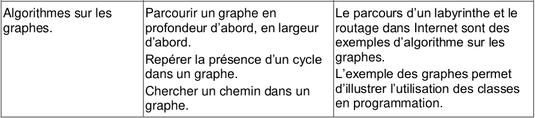
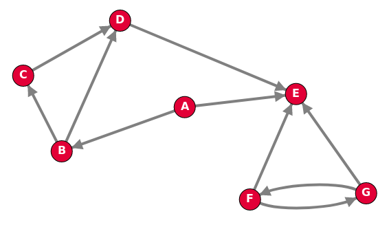
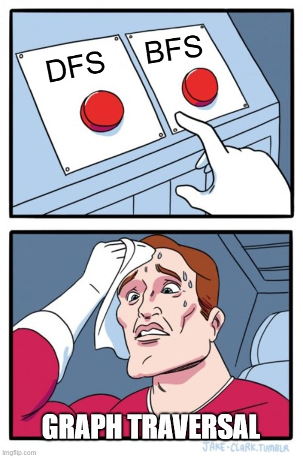

Graphes⚓︎

Ce cours est intégralement inspiré du cours de Cédric Gouygou , du lycée Marguerite de Valois d'Angoulême (16)
1. Notion de graphe et vocabulaire⚓︎
Le concept de graphe permet de résoudre de nombreux problèmes en mathématiques comme en informatique. C'est un outil de représentation très courant, et nous l'avons déjà rencontré à plusieurs reprises, en particulier lors de l'étude de réseaux.
1.1 Exemples de situations⚓︎
1.1.1 Réseau informatique⚓︎

1.1.2 Réseau de transport⚓︎

1.1.3 Réseau social⚓︎

1.1.4 Généralisation⚓︎
Une multitude de problèmes concrets d'origines très diverses peuvent donner lieu à des modélisations par des graphes : c'est donc une structure essentielle en sciences, qui requiert un formalisme mathématique particulier que nous allons découvrir.

L'étude de la théorie des graphes est un champ très vaste des mathématiques : nous allons surtout nous intéresser à l'implémentation en Python d'un graphe et à différents problèmes algorithmiques qui se posent dans les graphes.
1.2 Vocabulaire⚓︎
En général, un graphe est un ensemble d'objets, appelés sommets ou parfois nœuds (vertex or nodes en anglais) reliés par des arêtes ou arcs ((edges en anglais)). Ce graphe peut être non-orienté ou orienté .
1.2.1 Graphe non-orienté⚓︎
Dans un graphe non-orienté, les arêtes peuvent être empruntées dans les deux sens, et une chaîne est une suite de sommets reliés par des arêtes, comme C - B - A - E par exemple. La longueur de cette chaîne est alors 3, soit le nombre d'arêtes.
Les sommets B et E sont adjacents au sommet A, ce sont les voisins de A.
Exemple de graphe non-orienté : le graphe des relations d'un individu sur Facebook est non-orienté, car si on est «ami» avec quelqu'un la réciproque est vraie.
1.2.2 Graphe orienté⚓︎

Dans un graphe orienté, les arcs ne peuvent être empruntés que dans le sens de la flèche, et un chemin est une suite de sommets reliés par des arcs, comme B → C → D → E par exemple.
Les sommets C et D sont adjacents au sommet B (mais pas A !), ce sont les voisins de B.
Exemple de graphe orienté : le graphe des relations d'un individu sur Twitter est orienté, car on peut «suivre» quelqu'un sans que cela soit réciproque.
1.2.3 Graphe pondéré⚓︎
Un graphe est pondéré (ou valué) si on attribue à chaque arête une valeur numérique (la plupart du temps positive), qu'on appelle mesure, poids, coût ou valuation.
Par exemple:
- dans le protocole OSPF, on pondère les liaisons entre routeurs par le coût;
- dans un réseau routier entre plusieurs villes, on pondère par les distances.
1.2.4 Connexité⚓︎
Un graphe est connexe s'il est d'un seul tenant: c'est-à-dire si n'importe quelle paire de sommets peut toujours être reliée par une chaîne. Autrement un graphe est connexe s'il est «en un seul morceau».
Par exemple, le graphe précédent est connexe. Mais le suivant ne l'est pas: il n'existe pas de chaîne entre les sommets A et F par exemple.

Il possède cependant deux composantes connexes : le sous-graphe composé des sommets A, B, C, D et E d'une part et le sous-graphe composé des sommets F, G et H.
2. Modélisations d'un graphe⚓︎
Pour modéliser un graphe, il faut établir par convention une manière de donner les renseignements suivants :
- quels sont les sommets ?
- pour chaque sommet, quels sont ses voisins ? (et éventuellement quel poids porte l'arête qui les relie)
2.1 Représentation par matrice d'adjacence⚓︎
Principe
- On classe les sommets (en les numérotant, ou par ordre alphabétique).
- on représente les arêtes (ou les arcs) dans une matrice, c'est-à-dire un tableau à deux dimensions où on inscrit un 1 en ligne
iet colonnejsi les sommets de rangiet de rangjsont voisins (dits aussi adjacents).
Ce tableau s'appelle une matrice d'adjacence (on aurait très bien pu l'appeler aussi matrice de voisinage).
2.1.1 Graphe non orienté⚓︎
Dans ce graphe non orienté, comme B est voisin de C, C est aussi voisin de B, ce qui signifie que l'arête qui relie B et C va donner lieu à deux "1" dans la matrice, situé de part et d'autre de la diagonale descendante (un mathématicien parlera de matrice symétrique).
2.1.2 Graphe orienté⚓︎
Un graphe orienté est décrit par une matrice non symétrique.
2.1.3 Graphe pondéré⚓︎
Il peut exister des graphes pondérés et orientés.
2.1.4 Exercices⚓︎
Remarque
LibreOffice Draw permet de représenter les graphes : utiliser Ellipse ( + la touche shift pour avoir un cercle) et Connecteurs.
Exercice 1
Soit un ensemble d'amis connectés sur un réseau social quelconque. Voici les interactions qu'on a recensées :
- André est ami avec Béa, Charles, Estelle et Fabrice,
- Béa est amie avec André, Charles, Denise et Héloïse,
- Charles est ami avec André, Béa, Denise, Estelle, Fabrice et Gilbert,
- Denise est amie avec Béa, Charles et Estelle,
- Estelle est amie avec André, Charles et Denise,
- Fabrice est ami avec André, Charles et Gilbert,
- Gilbert est ami avec Charles et Fabrice,
- Héloïse est amie avec Béa.
Q1. Représenter le graphe des relations dans ce réseau social (on désignera chaque individu par l'initiale de son prénom). Il est possible de faire en sorte que les arêtes ne se croisent pas !
Correction Q1

Q2. Donner la matrice d'adjacence de ce graphe.
Correction Q2
\(\pmatrix{ 0 & 1 & 1 & 0 & 1 & 1 & 0 & 0 \\ 1 & 0 & 1 & 1 & 0 & 0 & 0 & 1 \\ 1 & 1 & 0 & 1 & 1 & 1 & 1 & 0 \\ 0 & 1 & 1 & 0 & 1 & 0 & 0 & 0 \\ 1 & 0 & 1 & 1 & 0 & 0 & 0 & 0 \\ 1 & 0 & 1 & 0 & 0 & 0 & 1 & 0 \\ 0 & 0 & 1 & 0 & 0 & 1 & 0 & 0 \\ 0 & 1 & 0 & 0 & 0 & 0 & 0 & 0 \\ }\)
Exercice 2
Construire les graphes correspondants aux matrices d'adjacence suivantes:
Q1. \(M_1 =\pmatrix{ 0&1&1&1&1\\ 1&0&1&0&0\\ 1&1&0&1&0\\ 1&0&1&0&1\\ 1&0&0&1&0\\ }\)
Correction
Q2. \(M_2=\pmatrix{ 0&1&1&0&1\\ 0&0&1&0&0\\ 0&0&0&1&0\\ 1&0&0&0&1\\ 0&0&0&0&0\\ }\)
Correction
Q3. \(M_3=\pmatrix{ 0&5&10&50&12\\ 5&0&10&0&0\\ 10&10&0&8&0\\ 50&0&8&0&100\\ 12&0&0&100&0\\ }\)
Correction
2.1.5 Implémentation Python des matrices d'adjacence⚓︎
Matrices d'adjacence en Python
Une matrice se représente naturellement par une liste de listes.
Exemple: La matrice \(M_1 =\pmatrix{ 0&1&1&1&1\\ 1&0&1&0&0\\ 1&1&0&1&0\\ 1&0&1&0&1\\ 1&0&0&1&0\\ }\), associée au graphe
sera représentée par la variable G suivante :
G = [[0, 1, 1, 1, 1],
[1, 0, 1, 0, 0],
[1, 1, 0, 1, 0],
[1, 0, 1, 0, 1],
[1, 0, 0, 1, 0]]
Complexité en mémoire et temps d'accès :
-
Pour un graphe à \(n\) sommets, la complexité en mémoire (appelée aussi complexité spatiale) de la représentation matricielle est en \(O(n^2)\).
-
Tester si un sommet est isolé (ou connaître ses voisins) est en \(O(n)\) puisqu'il faut parcourir une ligne, mais tester si deux sommets sont adjacents (voisins) est en \(O(1)\), c'est un simple accès au tableau.
La modélisation d'un graphe par sa matrice d'adjacence est loin d'être la seule manière de représenter un graphe : nous allons voir une autre modélisation, par liste d'adjacence.
2.2 Représentation par listes d'adjacence⚓︎
Principe
-
On associe à chaque sommet sa liste des voisins (c'est-à-dire les sommets adjacents). On utilise pour cela un dictionnaire dont les clés sont les sommets et les valeurs les listes des voisins.
-
Dans le cas d'un graphe orienté on associe à chaque sommet la liste des successeurs (ou bien des prédécesseurs, au choix).
Par exemple, le graphe sera représenté par le dictionnaire :
| üêç Script Python | |
|---|---|
1 2 3 4 5 6 | |
Complexité en mémoire et temps d'accès :
-
Pour un graphe à \(n\) sommets et \(m\) arêtes, la complexité spatiale de la représentation en liste d'adjacence est en \(O(n+m)\). C'est beaucoup mieux qu'une matrice d'adjacence lorsque le graphe comporte peu d'arêtes (i.e. beaucoup de 0 dans la matrice, non stockés avec des listes).
-
Tester si un sommet est isolé (ou connaître ses voisins) est en \(O(1)\) puisqu'on y accède immédiatement, mais tester si deux sommets sont adjacents (voisins) est en \(O(n)\) car il faut parcourir la liste.
2.2.1 Exercices⚓︎
Exercice 3
Construire les graphes correspondants aux listes d'adjacence suivantes.
Q1.
G1 = {
'A': ['B', 'C'],
'B': ['A', 'C', 'E', 'F'],
'C': ['A', 'B', 'D'],
'D': ['C', 'E'],
'E': ['B', 'D', 'F'],
'F': ['B', 'E']
}
Correction Q1
Q2.
G2 = {
'A': ['B'],
'B': ['C', 'E'],
'C': ['B', 'D'],
'D': [],
'E': ['A']
}
Correction Q2
3. Création d'une classe Graphe⚓︎
Dans cette partie, nous ne traiterons que des graphes non-orientés.
3.1 Interface souhaitée⚓︎
Nous voulons que le graphe puisse être créé grâce aux instructions suivantes :
g = Graphe(['A', 'B', 'C', 'D', 'E'])
g.ajoute_arete('A', 'B')
g.ajoute_arete('A', 'C')
g.ajoute_arete('A', 'D')
g.ajoute_arete('A', 'E')
g.ajoute_arete('B', 'C')
g.ajoute_arete('C', 'D')
g.ajoute_arete('D', 'E')
Nous souhaitons aussi pouvoir tester si deux sommets sont voisins avec la méthode sont_voisins :
>>> g.sont_voisins('E', 'A')
True
>>> g.sont_voisins('E', 'B')
False
Enfin, nous voulons pouvoir obtenir facilement la liste de tous les voisins d'un sommet avec la méthode voisins:
>>> g.voisins('C')
['A', 'B', 'D']
3.2 Conseils d'implémentation⚓︎
L'objet de type Graphe aura comme attributs :
- une liste
liste_sommets(donnée en paramètre dans la listeliste_sommets) - un dictionnaire
adjacents, où chaque sommet se verra attribuer une liste vide[].
3.3 Implémentation⚓︎
Exercice 4
Implémenter la classe Graphe
| üêç Script Python | |
|---|---|
1 2 3 4 5 6 7 8 9 10 11 12 13 14 | |
Implémentation d'une classe Graphe 
4.  Parcours de graphes ⚓︎
Parcours de graphes ⚓︎
Algorithme de parcours
Un parcours de graphe est un algorithme consistant à explorer tous les sommets d'un graphe de proche en proche à partir d'un sommet initial. Ces parcours sont notamment utilisés pour rechercher un plus court chemin (et donc dans les GPS) ou pour trouver la sortie d'un labyrinthe...
 Parcourir simplement le dictionnaire ou la matrice d’un
graphe n’est pas considéré comme un
parcours de graphe.
Parcourir simplement le dictionnaire ou la matrice d’un
graphe n’est pas considéré comme un
parcours de graphe.
Tous les parcours suivent plus ou moins le même algorithme de base :
-
On visite un sommet
A. On crée une structureSqui contiendra au départ l’ensemble des voisins deA. -
Tant que
Sn’est pas vide :- on choisit un sommet
sdeS - on visite
s - on ajoute à
Stous les voisins despas encore visités
- on choisit un sommet
Sommets visités
Contrairement à un parcours d'arbre, où les fils d'un nœud ne peuvent pas avoir été visités avant le nœud, un voisin d'un sommet peut avoir déjà été visité en tant que voisin d'un sommet précédent...
Il est donc nécessaire de mémoriser les sommets déja visités ou découverts (on dira qu'un sommet est découvert lorsqu'on l'ajoute à S).
Le choix de la structure de l'ensemble S est prépondérant:
- Si on choisit une file (FIFO): on visitera les sommets dans l'ordre d'arrivée, donc les plus proches du sommet précédent. On obtient donc un parcours en largeur
 BFS.
BFS. - Si on choisit une pile (LIFO): on visitera d'abord les derniers sommets arrivés, donc on parcourt le graphe en visitant à chaque étape un voisin du précédent. On obtient donc un parcours en profondeur DFS.

4.1 Le parcours en largeur (BFS, Breadth First Search)⚓︎
4.1.1 Principe⚓︎
Exemple de parcours en largeur, avec B comme sommet de départ:
Codes couleur :
- vert : les sommets non encore traités.
- rouge : le sommet en cours de traitement.
- orange : la file d'attente des sommets qui seront bientôt traités. On y rajoute à chaque fois les voisins du sommet en cours de traitement, uniquement si ils n'ont pas encore été découverts.
- noir : les sommets traités.
4.1.2 Algorithme BFS⚓︎
On utilise :
- une liste
traitesqui recueille les sommets visités (c'est-à-dire qu'on a fini de traiter, après avoir ajouté ses voisins dans la file d'attente) et qui sera renvoyée à la fin de l'algorithme; - une liste
decouvertsqui contient les sommets découverts au fur et à mesure du parcours; - une file
en_attentequi contient les sommets découverts mais non encore visités. On utilisera au choix une classeFileécrite plus tôt dans l'année ou tout simplement unelisten utilisantpop(0)(pour défiler) etappend()(pour enfiler).
En début d'algorithme, seul le sommet de départ depart donné en paramètre est découvert. La fonction BFS renvoie la liste des sommets dans l'ordre de visite lors du parcours en largeur.
Parcours en largeur - BFS
| üêç Script Python | |
|---|---|
1 2 3 4 5 6 7 8 9 10 11 12 13 14 15 16 17 | |
Intérêt de la liste decouverts
La liste decouverts contient tous les sommets qui ont été :
- soit traités (auquel cas ils sont dans la liste
traites) - soit en attente (auquel cas ils sont dans la liste
en_attente)
Le test de la ligne 13 if voisin not in decouverts: permet donc de ne pas mettre en file d'attente un voisin qui est (ou a été) déjà en file d'attente.
Que contient la file en_attente ?
À chaque instant, la file en_attente contient des sommets à la distance k+1 et à la distance k du point de départ :
Exercice 5
Grâce à la classe Graphe du 3.3, ce graphe s'implémente par :
| üêç Script Python | |
|---|---|
1 2 3 4 5 6 7 8 9 10 11 | |
Q1. Donner le parcours en largeur de g grâce à l'algorithme BFS, si le sommet de départ est B. Cela correspond au parcours présenté par le gif de début de paragraphe.
correction Q1
>>> BFS(g, 'B')
['B', 'A', 'D', 'E', 'C', 'F', 'G', 'H']
Q2. Deviner le parcours en largeur de départ D, puis de départ G. Vérifier grâce à votre algorithme.
Correction Q2
>>> BFS(g, 'D')
['D', 'B', 'C', 'E', 'A', 'F', 'G', 'H']
>>> BFS(g, 'G')
['G', 'E', 'F', 'H', 'B', 'D', 'A', 'C']
4.1.3 Application du BFS : recherche du plus court chemin⚓︎
L'algorithme BFS découvre les sommets «par cercles concentriques» autour du point de départ (ainsi que le montre la structure de la file d'attente). On découvre d'abord tous les sommets à la distance 1 du point de départ, puis à la distance 2, puis 3, etc.
Un sommet situé à la distance 5 sera découvert en tant que voisin d'un sommet à la distance 4, qui lui-même aura été découvert grâce à un sommet à la distance 3, qui lui-même...
On comprend donc que si on arrive à se souvenir du sommet «parent» de chaque sommet (celui qui lui a permis d'être découvert), on pourra alors reconstituer un chemin permettant de remonter au point de départ.
Nous allons pour cela nous servir d'une structure de dictionnaire pour associer à chaque sommet son sommet-parent.
Il faudra ensuite une fonction pour recréer le chemin.
Pourquoi le plus court chemin ?
- Comment est-on sûr qu'un chemin va être trouvé entre deux sommets A et B ?
Si le graphe est connexe, tout parcours BFS au départ de A va parcourir l'intégralité du graphe, et donc passera par B à un moment. Un chemin sera donc forcément trouvé entre A et B.
- Comment est-on sûr que ce chemin trouvé est le plus court ?
La découverte des sommets par cercles concentriques entre A et B nous assure qu'on ne peut pas rater le point B : s'il est à la distance k de A, il sera forcément visité puisque tous les sommets à la distance k vont passer par la liste d'attente, après les sommets de distance k-1 et avant les sommets de distance k+1.
Lorsqu'on remontera de B vers A en passant par les sommets parents successifs, il ne peut y avoir qu'un seul sommet par «couche» : le chemin sera donc exactement de longueur k, il sera donc minimal.
Recherche du plus court chemin
| üêç Script Python | |
|---|---|
1 2 3 4 5 6 7 8 9 10 11 12 13 14 15 16 17 18 19 20 21 22 23 24 25 26 27 28 29 30 31 | |
Exercice 6
Tester le code précédent pour trouver le plus court chemin entre A et G, entre H et C, entre B et G...
4.2 Le parcours en profondeur (DFS, Depth First Search)⚓︎
4.2.1 Parcours DFS récursif⚓︎
Le parcours en profondeur est un parcours où on va aller «le plus loin possible» sans se préoccuper des autres voisins non visités : on va visiter le premier de ses voisins non traités, qui va faire de même, etc. Lorsqu'il n'y a plus de voisin, on revient en arrière pour aller voir le dernier voisin non visité.
Dans un labyrinthe, ce parcours s'explique très bien : on prend tous les chemins sur la droite jusqu'à rencontrer un mur, auquel cas on revient au dernier embranchement et on prend un autre chemin, puis on repart à droite, etc.
C'est un parcours qui s'écrit naturellement de manière récursive :
Parcours en profondeur - DFS
| üêç Script Python | |
|---|---|
1 2 3 4 5 6 | |
Exercice 7
Q1. Donner (de tête) le parcours DFS de ce graphe en partant de A.
Rappel : les voisins sont donnés par ordre alphabétique. Le premier voisin de A est donc B.
Q2. Vérifier avec le code précédent.
Correction Q2
| üêç Script Python | |
|---|---|
1 2 3 4 5 6 7 8 9 10 11 12 13 14 15 16 17 18 19 20 21 22 23 24 25 26 27 28 29 30 31 32 33 34 35 | |
>>> DFSrec(g, [], 'A')
['A', 'B', 'D', 'C', 'E', 'F', 'G', 'H']
Q3. Reprendre les questions précédentes en changeant le sommet de départ.
4.2.2 Parcours DFS itératif⚓︎
Il «suffit» de remplacer la file du parcours BFS par une pile. Ainsi, on partira visiter le voisin tout juste ajouté à la file d'attente (qui porte maintenant mal son nom, puisque c'est devenu une pile).
Parcours en profondeur itératif - DFS
| üêç Script Python | |
|---|---|
1 2 3 4 5 6 7 8 9 10 11 12 | |
Remarques :
-
À la ligne 7, on inverse l'ordre des voisins pour que ce code renvoie le même parcours quele parcours récursif (sinon c'est le dernier voisin ajouté qui sera dépilé). Cela n'est pas obligatoire : il n'y a pas «un seul» parcours DFS (tout comme il n'y a pas qu'un seul BFS). Ce qui les caractérise est la méthode de découverte, plus que l'implémentation proprement dite.
-
Contrairement au BFS, il est possible d'empiler un sommet déjà découvert (on vérifie juste qu'il n'ait pas déjà été traité). Vous pouvez vous en apercevoir en écrivant l'état de la pile lors du parcours DFS itératif du graphe de l'exercice 6.